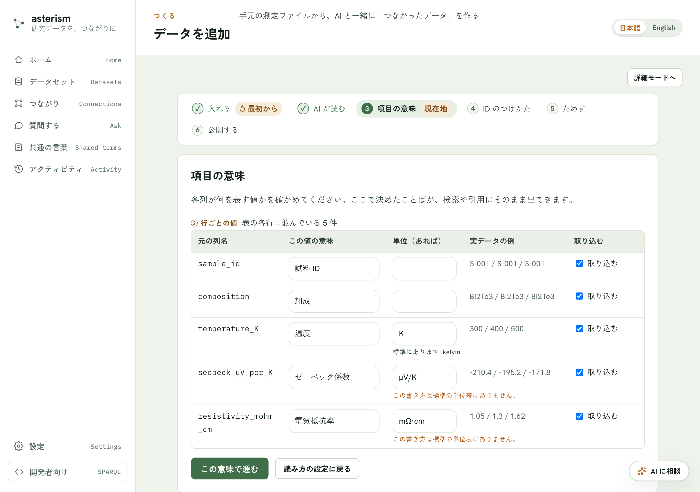
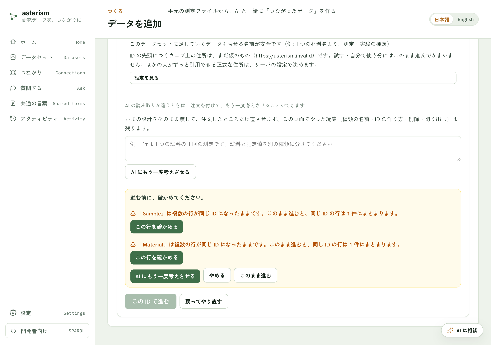
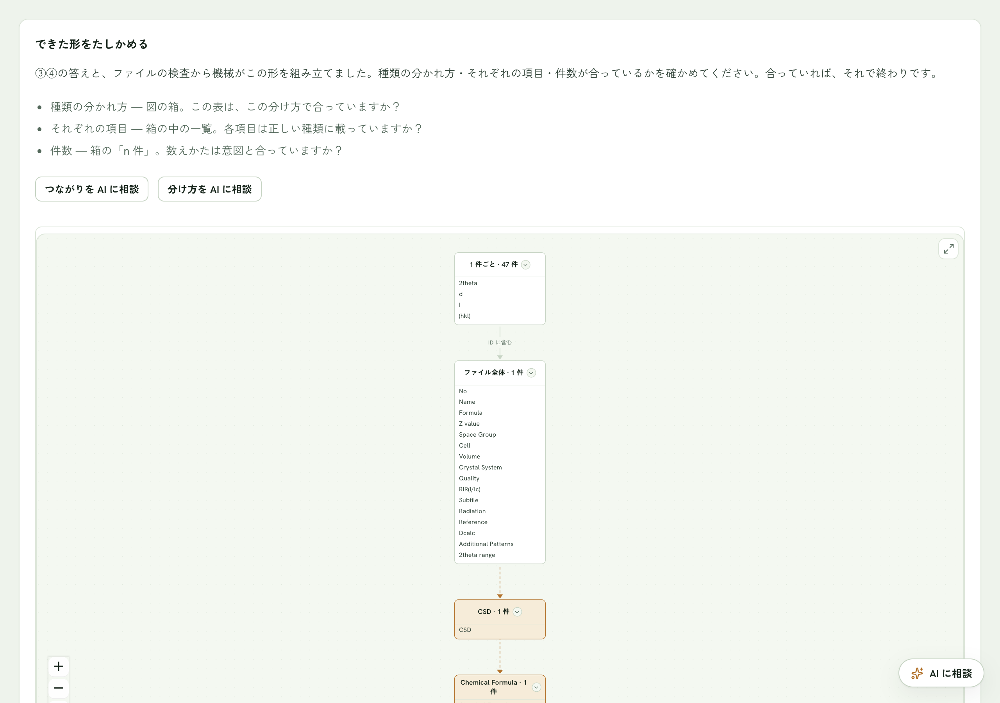
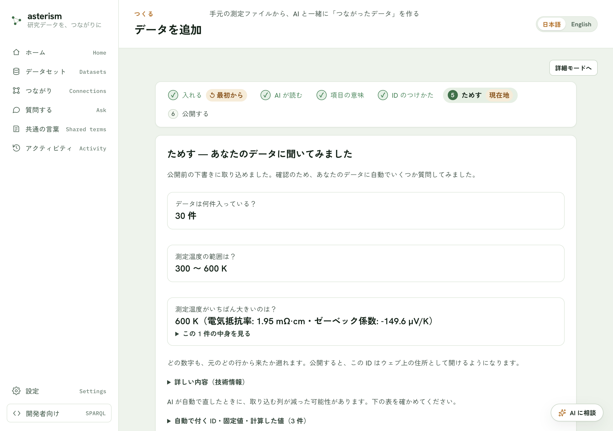
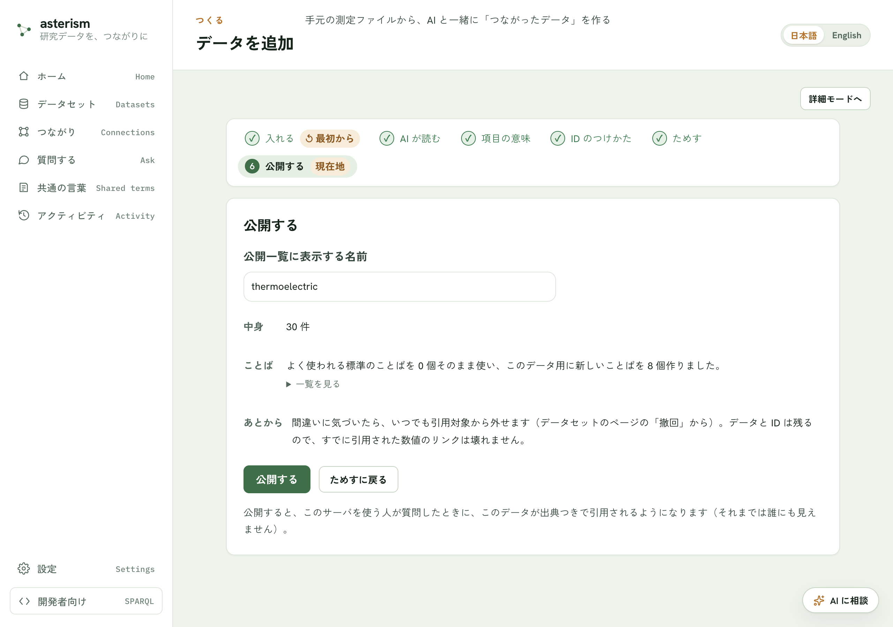

はじめる — かんたんモードの 7 ステップ
Asterism の「かんたんモード」は、研究データを取り込んで公開するまでを7 ステップの順番に進めるウィザードです。各ステップで確かめること・押すボタンをまとめます。
1. 入れる
測定データや文書のファイルをドラッグ＆ドロップするか、クリックして選びます。手元にファイルが無いときは「まずサンプルデータで試す」ボタンで最後まで試せます。置いたら読み取りが始まり、公開するまで内容は誰にも見えません。
2. AI が読む
「読み取りの確認」画面で、AI がファイルをどう読み取ったかを確認します。表のはじまる前に条件や見出しらしい行があった場合など、あなたしか知らないことを聞かれることがあります。列の分けかたや文字化けの直しもここでできます。内容を確かめたら「この内容で進む」ボタンで次へ。ファイルを変えたいときは「ファイルを選び直す」ボタンです。
続いて AI がデータを読む処理が走ります（「AI がデータを読んでいます」の表示）。他の画面を見に行っても続きますが、このタブは閉じないでください。読み取りに失敗したときは「もう一度 AI に読ませる」ボタンでやり直すか、「戻ってやり直す」ボタンで前の画面に戻れます。
3. 項目の意味
各列が何を表す値かを確かめます。ここで決めたことばが、検索や引用にそのまま出てきます。下書きは AI が書きますが、表の中は直接書き換えられます（ここでAI は使いません）。
一覧は 2 つに分かれています。
- 「① ファイル全体の値」— ファイルの先頭に一度だけ書かれている値です（装置ファイルの測定条件など）
- 「② 行ごとの値」— 表の各行に並んでいる値です
各行で、元の列名・実データの例を見ながら、その値の意味と単位を確かめます。使わない列は、右端の「取り込む」のチェックを外してください。空欄のまま進んでも大丈夫です（その列は元の列名のまま検索できます）。
確かめたら「この意味で進む」ボタンで次へ。読み取りの設定に戻りたいときは「読み方の設定に戻る」ボタンです。
{kind=link}

4. 外とのつながり
この画面の問いは 1 つだけです —他のファイルや他の人のデータにも、同じ表記で出てくる値はどれか。そういう値に ☑ を付けると、同じ値どうしが取り込むだけで自動でつながります。たとえばレシピの表とスーパーの価格表は、食材名「にんじん」が同じ表記で出てくるので、食材名に ☑ を付けておけば「にんじんを使うレシピと、いまの値段」を一度に引けるようになります。
付けるかどうかの目安は画面にも出ています。
- 付けるもの — 他でも同じ表記で出てくる言葉や番号。物質・製品・場所などの名前、化学式のような決まった書き方、DOI・カタログ番号のような公式の番号
- 付けないもの — このファイルの中だけの通し番号・自由記述のメモ。測定した数値に付けても ID には使われません（自動で外れます）
- 付けても項目は外れません（参照に変わるだけ）。公開するまでは、あとから付け直せます
値の一覧は「ファイルに一度だけ書かれている値」と「行ごとの値」に分かれていて、3. で決めた意味が併記されます。ファイル単位の値に 2 つ以上 ☑ を付けたときだけ、追加で 1 問聞かれます —「この表 1 枚を名指すのはどれ？」。選んだ値がこの表の ID になり、ほかの ☑ はつながる受け口になります。わからなければ「わからない（機械に任せる）」を選べば、機械が仮の ID を置いて、次の画面で ⚠ と一緒に知らせます。
迷ったら「迷ったら AI に相談」ボタンで相談チャットが開きます（文面が入った状態で開くだけなので、送るかどうかはあなたが決めます）。☑ を決めたら「えらび終えた — 形を組み立てる」ボタンで次へ。ここでの組み立ては機械の計算だけで、AI は使いません（数秒で終わります）。3. に戻りたいときは「← 項目の意味に戻る」ボタンです。
5. かたちをたしかめる
「できた形をたしかめる」画面には、3. と 4. の答えとファイルの検査から機械が組み立てたデータの形が、図で表示されます。図の箱 = データの種類で、箱の中に項目と件数が入っています。確かめることは 3 点です。
- 種類の分かれ方 — 図の箱。この表は、この分け方で合っていますか？
- それぞれの項目 — 箱の中の一覧。各項目は正しい種類に載っていますか？
- 件数 — 箱の「n 件」。数えかたは意図と合っていますか？
図の色と線の意味: 琥珀色の箱は 4. で ☑ を付けた「つながる受け口」、実線はID の入れ子（子の ID が親の ID を含む）、点線は取り込むときに機械が引く参照です（☑ を付けた項目は元の種類から外れず、参照として持ち続けます）。
- で機械が仮の ID を置いたときは、図の下に ⚠ が出ます。そのままでも進め
ますが、違うときは「名前・ID を直す」で選び直してください。また、同じ ID で数える種類が 2 つあり、しかも同じ項目を持っているときも ⚠ が出ます。重複そのものが禁止なわけではありません — 同じものの写しなら要らない方を消す、別のものなら項目を分ければ ⚠ は消えます。迷ったら「重複を AI に相談」ボタンで具体的に聞けます。
3 点が合っていれば「この ID で進む」ボタンで次へ。それで終わりです。
形が違うときは、「形が違うとき（直す）」の下の 3 つから直しかたを選びます。
- 「名前・ID を直す」ボタン — 種類ごとの名前と ID の作り方を確かめて直します。図の箱をクリックしても、その種類の直しが開きます
- 「1 つの種類を 2 つに分ける」ボタン — 1 行に別々のもの（例: 測定の記録と、測定した対象）が混ざっているとき。「＋ 同じ ID で種類を足す」ボタンで、いまの ID をそのまま使う種類をもう 1 つ足し、名前を付けて「足す」ボタンを押すと種類が増えます。増やした種類に載せる項目は「項目を移す」で移します
- 「項目を移す」ボタン — どの種類が、どの項目を持つかの一覧が開きます。右の「載せる種類」を選び直すと、その項目を持つ種類を変えられます。「ID にする」のチェックを付けた値が、それ自体で 1 件として数えられます
逆に、組み上がった形が行ごとの種類だけで「ファイル全体で 1 件」が無いときは、⚠ と「＋ ファイル全体の種類を作る」ボタンが出ます。押すと、ファイルに一度だけ書かれている値（カタログ番号や測定条件など）が、まとまった 1 件に分かれます。
わからなければ、いったんそのまま進んで構いません。公開するまでは、この画面に戻って何度でも直せます（種類を足す・消す・項目を移す）。動かせなくなるのは、公開して ID を配ったあとだけです。相談したいときは「つながりを AI に相談」ボタン・「分け方を AI に相談」ボタンで相談チャットが開きます。読み取りが違っていたら「AI にもう一度考えさせる」ボタンで指摘を伝えられます。前の画面に戻りたいときは「戻ってやり直す」ボタンです。
続いて「数の確認」の画面が出ます。元のファイルの行数と、できた記録の件数が合っているかを見てください。件数が行数よりずっと少ないときは、複数の行が1 件にまとまっています。意図と違えば「かたちの確認に戻る」ボタンで戻れます。ここでも項目の意味・単位は直せます。問題なければ「この意味で確定」ボタンです。
ID が重なっている種類があると、「進む前に、確かめてください。」という確認が出ます。種類ごとに「この行を確かめる」で中身を見て直すか、そのままでよければ「このまま進む」で先に進めます（同じ ID の行は 1 件にまとまります）。
{kind=link}

{kind=link}

6. ためす
実際にデータを取り込んでみて、想定どおりの結果になるか AI が自動でいくつか質問して確かめます。件数・値の範囲・いちばん大きい値などが出るので、元のファイルと見くらべてください。どの数字も、元のどの行から来たかを遡れます。
問題が無さそうなら「問題なさそう — 公開へ」ボタンで次へ。おかしいところがあれば「何かおかしい — 項目の意味に戻る」ボタンで 3. の画面に戻れます。「かたちの確認に戻る」ボタンで 5. に戻ることもできます。
{kind=link}

7. 公開する
公開一覧に表示する名前を付けて「公開する」ボタンを押すと、このサーバを使う人が質問したときにこのデータが出典つきで引用されるようになります（それまでは誰にも見えません）。中身の件数と、使ったことば（標準のことばをいくつ使い、このデータ用にいくつ作ったか）もここで確かめられます。
設計に直すところが残っているときは「ためすに戻る」ボタンから前の画面へ戻って直せます。公開が終わると、「質問する画面を開く」ボタンで、公開したデータに質問できる画面へ進めます。間違いに気づいたら、あとから引用対象を外すこともできます。
{kind=link}

途中でやめて最初からやり直したいとき
画面上部の手順バーにある「最初から」ボタン（① 入れる に戻る）で、置いたファイルとここまでの結果をすべて消して最初からやり直せます。
もっと詳しく操作したいとき
かんたんモードのどの画面でも「詳細モードへ」ボタンで、変換ルールや検査結果まですべての項目を表示する詳細モードに切り替えられます。かんたんな画面に戻るときは「かんたんモードへ戻る」ボタンです。
関連
画面ごとの導線（左メニューの項目、設定の場所など）はscreens.md を参照してください。